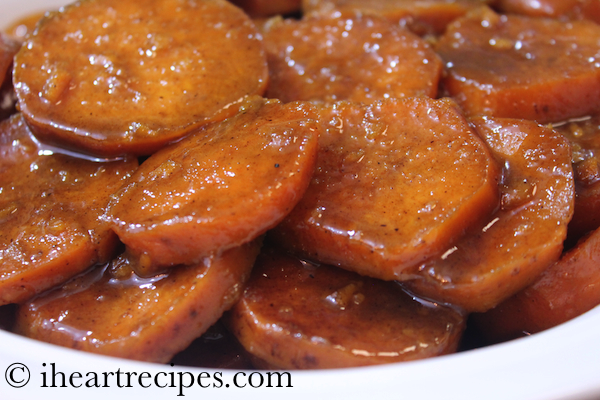

Yea Yea Yams

Can't go wrong with this classic side dish. Enjoy this spin on this classic sweet potato dish!
- 6 large sweet potatoes
- 1/2 cup butter
- 2 cups white sugar
- 1 tsp ground cinnamon
- 1 tsp ground nutmeg
- 1 tbs vanilla extract
- salt to taste
- Peel the sweet potatoes and cut them into slices.
- Melt the butter in a heavy skillet and add the sliced sweet potatoes.
- Mix the sugar, cinnamon, nutmeg and salt. Cover the sweet potatoes with sugar mixture and stir. Cover skillet, reduce heat to low and cook for about 1 hour or until potatoes are "candied". They should be tender but a little hard around the edges. Also the sauce will turn dark. You will need to stir occasionally during the cooking. Stir in the vanilla just before serving. Serve hot.